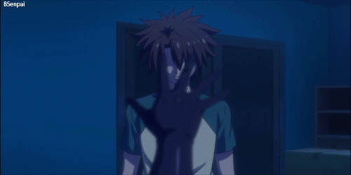

Basara Toujou (東城Tōjō Basara ) adalah protagonis pria utama dari seri ini. Dia adalah mantan anggota Klan Pahlawan setelah insiden mengerikan di mana kekuatan uniknya lepas kendali dan pergi bersama ayahnya. Basara segera tinggal di Rumah Tangga Toujou dengan Mio Naruse dan Maria Naruse yang, dia bersumpah untuk melindungi sebagai kakak laki-laki mereka.
Basara segera diturunkan menjadi tiga keturunan sebagai putra Jin Toujou , pahlawan yang juga meminum darah Fafnir; Sapphire , Saudari Raja Iblis sebelumnya; dan Raphaeline , anggota Sepuluh Dewa.
Basara adalah putra biologis dari "Dewa Perang", Jin Toujou dan saudara perempuan dari Raja Iblis sebelumnya, Sapphire dikandung setelah dia dan Raphaeline menyelamatkan Jin dari domain dimensi Fafnir. Meskipun karena Sapphire tidak dapat mengandung Basara di Alam Iblis karena menjadi anak dari iblis dan pahlawan, Raphaeline mengusulkan agar dia memindahkannya ke dalam rahimnya sehingga dia tidak hanya bisa membesarkannya di Alam Ilahi tetapi juga agar dia bisa menjadi anak di antara mereka bertiga. Namun, dia berbohong tentang bahaya dan tahu bahwa itu akan menghasilkan lebih banyak masalah baginya karena dia adalah salah satu dari Sepuluh Dewa yang membawa anak iblis dan pahlawan di dalam dirinya.
Editor,
HBTW
Kemampuan
Kekuatan Manusia Super:
ini pertama kali terlihat di Volume 1 ketika Basara dengan mudah menebas iblis dengan tebasan pedang. Karena Pakta Master-Servant, kekuatannya telah meningkat meskipun kekuatannya tidak banyak seperti Leohart, Shiba atau ayahnya.
Kecepatan Luar Biasa:
Basara adalah Petarung Tipe Kecepatan sebagai dasar gayanya, yang berarti dia menggunakan kecepatannya untuk keuntungannya.

Master Swordsman:
Basara adalah pendekar pedang yang sangat terampil, sebagai seorang anak, ia dipuji sebagai seorang jenius yang bisa menang melawan Pahlawan yang berpengalaman sekalipun. Meskipun tidak berlatih sejak pembuangannya, dia memotong peluru ajaib Maria setelah menggunakan Banishing Shift di sampingnya, lalu menahannya sendiri melawan Lars meskipun sudah terluka dari sebelumnya. Basara mengasah keterampilannya saat dia terus menghadapi lawan yang kuat, yang ditingkatkan melalui pelatihan dengan ayahnya. Kecepatan dan keterampilannya memungkinkan dia untuk bertarung melawan Leohart dan Celis , dia kemudian memotong Qillin menggunakan satu pukulan.
SKILL
NAMA SKILL
BESAR KEKUATAN
Superhuman Condition
Basara dengan mudah mengiris iblis dengan tebasan pedang. Karena Pakta Master-Servant, kekuatannya telah meningkat meskipun kekuatannya tidak banyak seperti Leohart, Shiba atau ayahnya.